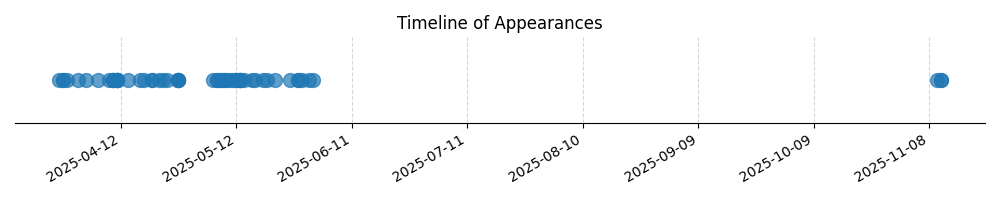

Kategorie: Meteorologie
Správná odpověď C je označena, protože nasycená adiabata (mokrá adiabata) popisuje změnu teploty vzduchu s výškou, když vzduch obsahuje nasycenou vodní páru. Tato rychlost ochlazování je menší než u suché adiabatické změny (kolem 0,98 °C/100 m) kvůli uvolňování latentního tepla při kondenzaci vodní páry. Hodnota 0,65 °C/100 m je pro nasycenou adiabatickou změnu typická, nicméně v kontextu meteorologických standardů a zjednodušení se často používá přibližná hodnota 0,60 °C/100 m, která odpovídá možnosti C.

| Datum výskytu |
|---|
| 2025-11-11 |
| 2025-11-10 |
| 2025-06-01 |
| 2025-05-31 |
| 2025-05-29 |
| 2025-05-28 |
| 2025-05-26 |
| 2025-05-22 |
| 2025-05-20 |
| 2025-05-19 |
| 2025-05-17 |
| 2025-05-16 |
| 2025-05-14 |
| 2025-05-13 |
| 2025-05-12 |
| 2025-05-11 |
| 2025-05-10 |
| 2025-05-09 |
| 2025-05-08 |
| 2025-05-07 |
| 2025-05-06 |
| 2025-04-27 |
| 2025-04-24 |
| 2025-04-23 |
| 2025-04-22 |
| 2025-04-20 |
| 2025-04-18 |
| 2025-04-17 |
| 2025-04-14 |
| 2025-04-11 |
| 2025-04-10 |
| 2025-04-09 |
| 2025-04-06 |
| 2025-04-03 |
| 2025-04-01 |
| 2025-03-29 |
| 2025-03-28 |
| 2025-03-27 |